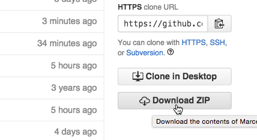

Status 
Quick links
What is ITIM/GITIM?
 ITIM and GITIM are two algorithms for the identification
of interfacial molecules or atoms. GITIM is a generalization of the
ITIM algorithm, which has been designed for planar interfaces. GITIM,
on the contrary, is free from any geometrical constraints and can
be used to analyze intrinsic properties of surfaces with arbitrary
shape.
ITIM and GITIM are two algorithms for the identification
of interfacial molecules or atoms. GITIM is a generalization of the
ITIM algorithm, which has been designed for planar interfaces. GITIM,
on the contrary, is free from any geometrical constraints and can
be used to analyze intrinsic properties of surfaces with arbitrary
shape.
What can I find here ?
Two code branches, ITIM and GITIM, which implement the respective algorithms in the form of a program that can read GROMACS trajectories.
Instructions on how to compile the software
A tutorial on how to compute intrinsic profiles
References
Which branch should I use, ITIM or GITIM?
If you are interested in planar interfaces only, use the ITIM branch.
Currently the code is undergoing a major restructuring, with new features added and bugs fixed. The ITIM branch is so far the most up-to-date, with a new build system that ensures compatibility with a broader range of GROMACS versions. New features/bugfix are being backported to the GITIM branch.
Which features are included?
- Identification of interfacial atoms
- Identification of interfacial molecules
- Identification of further atomic/molecular layers
- Cluster search to deal with partially miscible systems
- Calculation of intrinsic and non-intrinsic density and mass profiles
- Use of enhanced Monte Carlo sampling to take into account the fluctuations of the opposite interface on the density profiles
- Exporting PDB files containing also the information on the layer to which atoms belong to, as well as the intrinsic distance from the surface.
Note: Some of the features are so far present only in the ITIM branch and are currently being ported to the GITIM branch.
Which code is faster, ITIM or GITIM
ITIM, by far. This is because GITIM needs to compute the alpha-shape of the phase, which in turn relies on the Delauney triangulation. This is done through QHull, but it is still much slower than the ITIM algorithm. So, if you only have to deal with planar interfaces, go for the ITIM branch.
What do I need to build the code ?
- A gromacs build + sources (compatibility starting from GROMACS 4.6.7 up to 5.1)
- Cmake >= 2.8.11
What can you do with GITIM?
Check out the usage example page of the gitim web site http://www.gitim.eu
References
If you use this code to publish some research results, please read and cite both of the two following papers.
M. Sega, S. S. Kantorovich P. Jedlovszky and M. Jorge, J. Chem. Phys. 138, 044110 (2013) The generalized identification of truly interfacial molecules (ITIM) algorithm for nonplanar interfaces.
L. B. Pártay, G. Hantal, P. Jedlovszky, Á. Vincze and G. Horvai, J. Comp. Chem. 29, 945 (2008) A new method for determining the interfacial molecules and characterizing the surface roughness in computer simulations. Application to the liquid–vapor interface of water
How to compile
Requirements
- A working version of GROMACS (source code and build tree)
- Cmake (>= 2.8.11)
- For GITIM only, the Gnu Scientific Library (GSL)
Support of GROMACS versions from 4.6 up to 5.1 (included) is guaranteed for the ITIM branch. For the GITIM branch, the build system is currently being updated, and out-of-the-box compatibility with all GROMACS version is not guaranteed.
Obtaining the software
If you have git installed on your system, simply use the command
git clone https://github.com/Marcello-Sega/gitim.git
Otherwise, download the latest commit from the web interface:

Configuring and building
enter the repository and create a build directory
cd gitim
mkdir build
cd build
There, launch cmake providing the location of your gromacs tree and your gromacs build (these two could coincide), for example:
cmake .. -DMYGMX_SRC=~/gromacs-5.0.6/ -DMYGMX_BUILD=~/gromacs-5.0.6/build/
compile with
make
Done!
Here is what I see on my terminal when I do a fresh install:
> clear
> git clone https://github.com/Marcello-Sega/gitim.git
Cloning into 'gitim'...
remote: Counting objects: 590, done.
remote: Compressing objects: 100% (43/43), done.
remote: Total 590 (delta 91), reused 69 (delta 69), pack-reused 478
Receiving objects: 100% (590/590), 2.61 MiB | 1.55 MiB/s, done.
Resolving deltas: 100% (322/322), done.
Checking connectivity... done.
> cd gitim
> ls
CMakeLists.txt COPYING DISCLAIMER HOWTO README.md examples gmx_itim.cpp maintainer media
> mkdir build
> cd build/
> cmake .. -DMYGMX_TREE=~/gromacs-5.0.6/ -DMYGMX_BUILD=~/gromacs-5.0.6/build/
-- The CXX compiler identification is AppleClang 6.0.0.6000056
-- Check for working CXX compiler: /usr/bin/c++
-- Check for working CXX compiler: /usr/bin/c++ -- works
-- Detecting CXX compiler ABI info
-- Detecting CXX compiler ABI info - done
-- checking version file ~/gromacs-5.0.6/build/src/external/tng_io/include/tng/version.h
-- checking version file ~/gromacs-5.0.6/build/src/gromacs/version.h
-- ============================================================
-- GMX version: 50000 on Darwin-14.5.0
-- ============================================================
--
-- ==================================================
-- Using libraries: ~/gromacs-5.0.6/build/lib/libgromacs.dylib
-- ==================================================
--
-- GMX LIB: ~/gromacs-5.0.6/build/lib/libgromacs.dylib
-- Configuring done
-- Generating done
-- Build files have been written to: /tmp/gitim/build
> make
Scanning dependencies of target g_itim
[100%] Building CXX object CMakeFiles/g_itim.dir/gmx_itim.cpp.o
Linking CXX executable g_itim
[100%] Built target g_itim
> ls
CMakeCache.txt CMakeFiles Makefile cmake_install.cmake examples g_itim